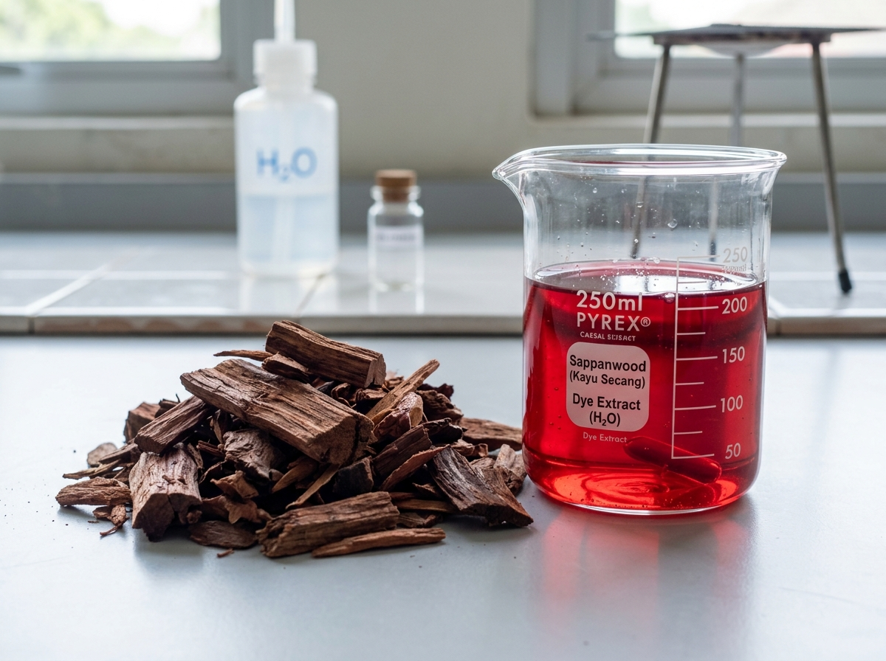
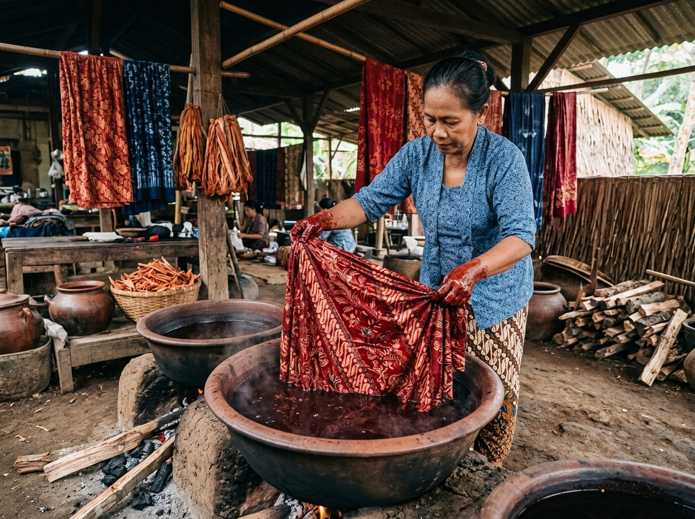

LEMBAR KERJA PESERTA DIDIK (LKPD) BERBASIS ETNOSAINS
- Bacalah stimulus kearifan lokal etnosains secara cermat bersama anggota kelompok sebelum merumuskan hipotesis.
- Gunakan masker saat menimbang serbuk simplisia teras kayu secang untuk menghindari inhalasi debu halus organik.
- Berhati-hatilah saat mengoperasikan penangas air panas (water bath) pada suhu 70°C–100°C, gunakan penjepit kayu atau sarung tangan isolator termal.
- Praktikum ini menerapkan 4 pilar Green Chemistry: bahan terbarukan, pelarut aman (akuades), efisiensi energi termal (60°C), dan bebas limbah B3.
- Seluruh perubahan isian pada lembar kerja ini disimpan secara otomatis di peramban Anda.
Capaian & Tujuan Pembelajaran
Peserta didik mampu menerapkan prinsip kerja ilmiah untuk menyelidiki faktor-faktor yang mempengaruhi laju pelarutan/ekstraksi bahan alam dan kestabilan termal senyawa organik; menghubungkan fenomena makroskopik perubahan warna dengan mekanisme submikroskopik kromofor kuinon dan formulasi simbolik Hukum Beer-Lambert; serta merekonstruksi kearifan lokal (*indigenous science*) perajin batik nusantara menjadi sains ilmiah (*scientific science*).
- Critical Thinking: Menganalisis pengaruh variasi suhu ekstraksi (40°C, 50°C, 60°C, 70°C, dan 80°C) terhadap perolehan rendemen dan nilai absorbansi spektroskopi ekstrak kayu secang secara kuantitatif.
- Scientific Inquiry: Menentukan suhu optimum ekstraksi pigmen brazilein dalam pelarut ramah lingkungan (*green solvent*) akuades murni.
- Conceptual Integration: Menjelaskan fenomena termolabilitas (penurunan absorbansi pada suhu >80°C) melalui integrasi tiga tingkatan representasi (makroskopik, submikroskopik kromofor kuinon, dan simbolik stoikiometri).
- Cultural Reconstruction: Menguraikan fungsi mordan tawas (Al3+) dan air kapur (Ca2+/basa) dalam fiksasi warna kain batik mori.
- Collaboration & Character: Menumbuhkan kesadaran terhadap nilai-nilai luhur kearifan lokal nusantara serta etos pelestarian lingkungan hidup (*Green Chemistry*).
Stimulus Etnosains: Tradisi Pewarnaan Batik Nusantara
Di sentra kerajinan batik alami nusantara, teras kayu secang (Caesalpinia sappan L.) telah dimanfaatkan sejak berabad-abad silam sebagai pewarna alami merah yang sakral dan ramah lingkungan. Perajin merebus serutan kayu tua dalam kuali berbahan tanah liat atau baja tahan karat dengan nyala api terkontrol:
Pigmen metabolit sekunder utama kayu secang adalah brazilin (C16H14O5), suatu senyawa homoisoflavonoid yang kaya akan gugus hidroksil fenolik (−OH). Berdasarkan prinsip termodinamika kelarutan "like dissolves like", molekul air (H2O) yang bersifat sangat polar (memiliki momen dipol permanen μ = 1,85 D dan konstanta dielektrik tinggi ε ≈ 80) dapat membentuk jaringan ikatan hidrogen intermolekuler yang kuat dengan gugus hidroksil brazilin.
Pemanasan air memicu pelunakan matriks hemiselulosa dan lignin dinding sel kayu secang, membuka pori-pori simplisia secara makroskopik.
Energi termal meningkatkan energi kinetik molekul pelarut, mempercepat laju penetrasi molekul air ke vakuola sel untuk melarutkan kristal brazilin.
Pada suhu >80°C hingga mendidih, cincin piran brazilein mengalami degradasi termolabil dan polikondensasi membentuk zat cokelat inaktif.


Gambar 1. Simplisia serutan teras kayu secang 40 mesh (kiri) dan tradisi pencelupan kain batik mori pada larutan ekstrak secang (kanan).
Identifikasi & Rumusan Masalah Ilmiah
Berdasarkan wacana etnosains di atas, diskusikan bersama kelompok Anda mengenai keterkaitan suhu penangas air dengan kualitas warna ekstrak yang diperoleh. Rumuskan 2 (dua) pertanyaan penyelidikan ilmiah:
Perumusan Hipotesis Ilmiah
Kemukakan hipotesis ilmiah (jawaban sementara berbasis teori kinetika difusi Fick dan kestabilan termal senyawa organik) kelompok Anda:
Rancangan Variabel & Prosedur Kerja Terstandar
| Jenis Variabel | Operasionalisasi dalam Eksperimen |
|---|---|
| Variabel Bebas (Manipulasi) | Suhu penangas air ekstraksi termostatik: 40°C, 50°C, 60°C, 70°C, dan 80°C. |
| Variabel Terikat (Respon) | Persentase rendemen (%), nilai absorbansi UV-Vis (λmaks 446 nm), koordinat warna CIE a* (kemerahan), dan deskripsi visual rona warna. |
| Variabel Kontrol | Massa simplisia secang (10,00 g), volume akuades (100 mL, rasio 1:10 g/mL), ukuran partikel simplisia (40 mesh), durasi ekstraksi (30 menit), dan kecepatan putaran pengadukan termostatik (150 rpm). |
- Timbang tepat 10,00 gram serutan kayu secang 40 mesh menggunakan neraca analitik ke dalam 5 labu Erlenmeyer 250 mL.
- Tambahkan 100 mL akuades murni ke dalam masing-masing labu (rasio padat-cair 1:10 g/mL). Tutup mulut labu rapat dengan aluminium foil.
- Panaskan labu pada penangas air (*water bath shaker*) dengan pengadukan termostatik 150 rpm pada variasi suhu: 40°C, 50°C, 60°C, 70°C, dan 80°C selama tepat 30 menit.
- Saring filtrat hangat menggunakan corong kaca dan kertas saring Whatman No. 42 ke dalam botol vial gelap untuk memisahkan ampas residu simplisia.
- Ukur nilai serapan filtrat pada panjang gelombang maksimum (λmaks 443–455 nm) menggunakan spektrofotometer UV-Vis dan catat deskripsi visual warna larutan.
- Celupkan potongan kain mori primissima putih (5 × 5 cm) ke dalam ekstrak 60°C, tiriskan, lalu celupkan ke dalam larutan mordan tawas 5% dan air kapur jenuh. Amati ketahanan dan rona warnanya.
Video Prosedur: Pembuatan Pewarna Alami Kayu Secang & Pencelupan Kain
Saksikan langkah riil preparasi serutan kayu secang, perebusan pada suhu terkontrol untuk mengekstraksi kromofor brazilein, penyaringan filtrat, serta teknik fiksasi mordan pada kain mori. Video dapat diputar langsung di bawah ini atau dibuka di peramban Anda.

Tabel Data Hasil Pengamatan & Kurva Spektroskopi
Catat data perlakuan ekstraksi kelompok Anda pada tabel berikut. Persentase rendemen dihitung otomatis dari massa simplisia dan massa ekstrak kering:
Formulasi Matematis: Persentase Rendemen Ekstrak (% Rendemen)
| No | Pelarut | Suhu (°C) | Massa Simplisia | Bobot Ekstrak | % Rendemen | λ maks | Absorbansi (A) | Deskripsi Warna Visual |
|---|---|---|---|---|---|---|---|---|
| 1 | Kuning jingga terang | |||||||
| 2 | Jingga kemerahan | |||||||
| 3 | Merah segar delima (Optimum) | |||||||
| 4 | Merah agak gelap | |||||||
| 5 | Merah kecokelatan kusam |
Kurva Hubungan Suhu Ekstraksi vs Nilai Absorbansi UV-Vis (A) & Rendemen (%)
λ maks = 446 nm • Pelarut AkuadesTabel Uji Fiksasi Mordan pada Kain Batik Mori:
| Perlakuan Mordan | Bahan Kimia Pengikat | Perubahan Warna Kain Mori | Fungsi dalam Fiksasi Batik |
|---|---|---|---|
| Tanpa Mordan (Kontrol) | - (Ekstrak murni) | Merah terang (mudah luntur) | Warna awal serapan fisik tanpa ikatan kimia koordinasi kuat. |
| Mordan Tawas | KAl(SO4)2·12H2O (Al3+) | Merah muda cerah awet | Membentuk kompleks khelat ion Al3+, mengunci warna pada serat selulosa. |
| Mordan Kapur Sirih | Ca(OH)2 jenuh (Ca2+ & OH-) | Merah tua keunguan (maroon pekat) | Deprotonasi gugus fenol dalam suasana basa (efek batokromik bergeser ke panjang gelombang lebih panjang). |
Analisis Data Penyelidikan (3 Tingkat Representasi Kimia)
Tingkat 1: Analisis Representasi Makroskopik (Fenomena Teramati)
Tingkat 2: Analisis Representasi Submikroskopik (Partikulat & Molekuler)
Tingkat 3: Analisis Representasi Simbolik (Persamaan Reaksi & Notasi Matematika)
Pertanyaan Evaluasi Penalaran Kritis (HOTS)
Kesimpulan Akhir Penyelidikan
Sintesiskan seluruh hasil pengamatan eksperimen, teori kinetika pelarutan, kestabilan termolabil brazilein, dan rekonstruksi etnosains yang telah Anda lakukan ke dalam sebuah kesimpulan utuh:
Lembar Refleksi Diri & Sikap Ilmiah Etnopedagogi
Berilah tanda centang (✓) pada pernyataan yang paling mencerminkan pengalaman dan refleksi belajar Anda:
Lembar Pengesahan & Rubrik Asesmen Pendidik
| Aspek Penilaian | Skor Maks | Skor Perolehan | Catatan / Umpan Balik Guru |
|---|---|---|---|
| 1. Perumusan Masalah & Hipotesis | 20 | ||
| 2. Ketelitian Data Eksperimen / Tabel | 25 | ||
| 3. Analisis 3 Tingkat Representasi Kimia | 30 | ||
| 4. Refleksi Kritis HOTS & Kesimpulan | 25 | ||
| TOTAL NILAI AKHIR (100) | 100 | Status: Tuntas / Remedial / Pengayaan |
Mengetahui,
Guru Pembimbing Kimia
NIP. .................................................
Semarang, ............................. 2026
Ketua Kelompok Penyelidik
NISN. ..............................................